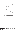

XMM-Newton Science Analysis System
omqualitymap (omqualitymap-1.4) [xmmsas_20170112_1337-16.0.0]
Setting of bit 7 (Near image edge/ corner of OM detector)
Any quality-image pixels
 12 unbinned pixels from an edge will have bit 7 set.
Additionally, any quality-image pixels outside a circle centred on x=979.2, y=1016.0, with radius
1300 unbinned pixels, will also have bit 7 set.
XMM-Newton SOC/SSC -- 2017-01-12